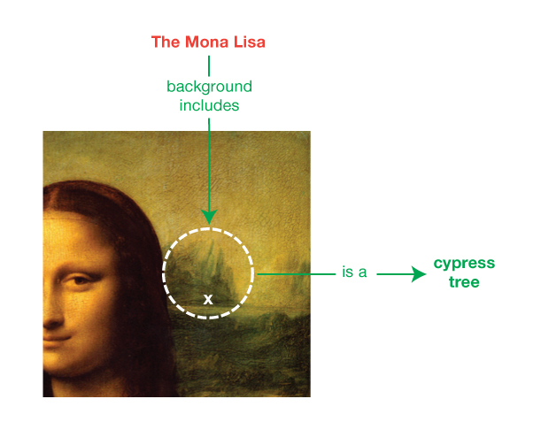

This primer is designed to provide the reader with the basic
knowledge required to effectively use RDF. It introduces the basic
concepts of RDF and shows concrete examples of the use of RDF.
Secs. 3-5 can be used as a minimalist introduction into the key
elements of RDF. Changes between RDF 1.1
and RDF 1.2 are summarized in a separate document: What’s New in RDF 1.2 [RDF12-NEW].
Status of This Document
This section describes the status of this
document at the time of its publication. A list of current W3C
publications and the latest revision of this technical report can be found
in the
W3C standards and drafts index at
https://www.w3.org/TR/.
This document is part of the RDF 1.2 document suite. It is an
informative note on the key concepts of RDF. For a normative
specification of RDF 1.2 the reader is referred to the RDF 1.2 Concepts and Abstract Syntax document
[RDF12-CONCEPTS].
Group Draft Notes are not endorsed by
W3C nor its Members.
This is a draft document and may be updated, replaced or obsoleted by other
documents at any time. It is inappropriate to cite this document as other
than work in progress.
The
W3C Patent
Policy
does not carry any licensing requirements or commitments on this
document.
The Resource Description Framework (RDF) is a framework for
expressing information about
resources.
Resources
can be anything, including documents, people, physical objects, and abstract
concepts.
RDF is intended for situations in which information on the Web needs to
be processed by applications, rather than being only displayed to
people. RDF provides a common framework for expressing this
information so it can be exchanged between applications without
loss of meaning. Since it is a common framework, application
designers can leverage the availability of common RDF parsers and
processing tools. The ability to exchange information between
different applications means that the information may be made
available to applications other than those for which it was
originally created.
In particular RDF can be used to publish and interlink data on the Web.
For example, retrieving http://www.example.org/bob#me
could provide data about Bob, including the fact that he
knows Alice, as identified by her IRI (an IRI is an "Internationalized
Resource Identifier"; see 3.2 IRIs for details).
Retrieving Alice's IRI could then provide more data about her, including links
to other datasets for her friends, interests, etc. A person or
an automated process can then follow such links and aggregate data about these
various things. Such uses of RDF are often
qualified as Linked Data [LINKED-DATA].
This document is not normative and does not give a complete
account of RDF 1.2. Normative
specifications of RDF can be found in the following documents:
A document describing the basic concepts underlying RDF, as
well as abstract syntax ("RDF Concepts and Abstract Syntax")
[RDF12-CONCEPTS]
A document describing the formal model-theoretic semantics
of RDF ("RDF Semantics") [RDF12-SEMANTICS]
RDF/XML [RDF12-XML] (the original 2004 syntax, updated
for RDF 1.2)
A document describing RDF Schema [RDF12-SCHEMA], which
provides a data-modeling vocabulary for RDF data.
2. Why Use RDF?
The following illustrates various different uses of RDF, aimed
at different communities of practice.
Adding machine-readable information to Web pages using, for example,
the popular schema.org
vocabulary, enabling them to be displayed
in an enhanced format on search engines or to be processed automatically
by third-party applications.
Enriching a dataset by linking it to third-party
datasets. For example, a dataset about
paintings could be enriched by linking them to the corresponding
artists in Wikidata,
therefore giving access to a wide range of information about
them and related resources.
Interlinking API feeds, making sure that clients can easily
discover how to access more information.
Using the datasets currently published as Linked Data
[LINKED-DATA], for example
building aggregations of data around specific topics.
Building distributed social networks by interlinking RDF
descriptions of people
across multiple Web sites.
Providing a standards-compliant way for exchanging data
between databases.
Interlinking various datasets within an organisation,
enabling cross-dataset queries to
be performed using SPARQL [SPARQL12-CONCEPTS].
3. RDF Data Model
3.1 Triples
RDF allows us to make statements about resources.
The format of these statements is simple. A statement always
has the following structure:
<subject><predicate><object>
An RDF statement expresses a relationship between two resources.
The subject and the object
represent the two resources being
related; the predicate represents the nature of their
relationship. The relationship is phrased in a directional way
(from subject to object) and is called in RDF a
property. Because RDF statements consist of
three elements they are called triples.
Here are examples of RDF triples (informally expressed in pseudocode):
The same resource is often referenced in multiple triples. In the example above,
Bob is the subject of four triples, and the Mona Lisa is the subject of
one and the object of two triples. This ability to have the same resource be
in the subject position of one triple and the object position of another
makes it possible to find connections between triples, which is an
important part of RDF's power.
A set of triples is called a graph.
We can visualize a set of triples as a connected graph.
Graphs consist of nodes and arcs. The subjects and
objects of the triples make up the nodes in the graph; the
predicates form the arcs. Fig. 1
shows the graph resulting from the sample triples.
Once you have a graph like this you can use SPARQL [SPARQL12-CONCEPTS] to
query for e.g. people interested in paintings by Leonardo da
Vinci.
The RDF Data Model is described in this section
in the form of an "abstract syntax", i.e. a data model that is independent of a
particular concrete syntax (the syntax used to represent triples stored in
text files). Different concrete syntaxes may
produce exactly the same graph from the perspective of the
abstract syntax. The semantics of RDF graphs [RDF12-SEMANTICS] are defined in
terms of this abstract syntax. Concrete RDF syntax is introduced
later in 5. Writing RDF graphs.
In the next four subsections, we discuss the four kinds of
RDF term
that occur in triples: IRIs, literals, blank nodes, and triple terms.
3.2 IRIs
The abbreviation IRI is short for "Internationalized Resource
Identifier". An IRI
identifies a resource. The URLs (Uniform Resource Locators) that
people use as Web addresses are one form of IRI. Other forms of IRI
provide an identifier for a resource without implying its location
or how to access it. The notion of IRI is a
generalization of URI (Uniform Resource Identifier), allowing
non-ASCII characters to be used in the IRI character string. IRIs are specified
in RFC 3987 [RFC3987].
IRIs can appear in all three positions of a triple.
As mentioned, IRIs are used to identify resources such as documents,
people, physical objects, and abstract concepts.
For example, the IRI for Leonardo da Vinci in DBpedia is:
IRIs are global identifiers, so other people can re-use this
IRI to identify the same thing. For example, the following IRI is
used by many people as an RDF property to state an acquaintance
relationship between people:
RDF is agnostic about what the IRI represents. However,
IRIs may be given meaning by particular vocabularies or
conventions. For example,
DBpedia uses IRIs of the form
http://dbpedia.org/resource/Name to denote the thing
described by the corresponding Wikipedia article.
3.3 Literals
Literals
are basic values that are not IRIs. Examples of literals include
strings such as "La Joconde", dates such as "the 4th of July, 1990"
and numbers such as "3.14159".
Literals are associated with a datatype
enabling such values to be parsed and interpreted correctly.
String literals can optionally be associated with a language tag.
For example, "Léonard de Vinci" could
be associated with the "fr" language tag and "李奥纳多·达·文西"
with the "zh" language tag.
Literals may only appear in the object position of a triple.
The RDF Concepts document provides a (non-exhaustive)
list of datatypes.
This includes many datatypes defined by XML Schema, such as string, boolean, integer, decimal and date.
3.4 Blank nodes
IRIs and literals together provide the basic material for
writing down RDF statements. In addition, it is sometimes handy
to be able to talk about resources without bothering to use a global
identifier. For example, we might want to state that the Mona
Lisa painting has in its background an unidentified tree which
we know to be a cypress tree. A resource without a global identifier, such as the
painting's cypress tree, can be represented in RDF by a blank node.
Blank nodes are like simple variables in algebra;
they represent some thing without saying what their value is.
Blank nodes can appear in the subject and object
position of a triple. They can be used
to denote resources without explicitly naming them with an
IRI.

Figure 2Informal blank node example: the background of the Mona Lisa depicts
an unnamed resource that belongs to the class of cypress trees.
3.5 Triple terms
As the basic unit of description in RDF, a triple states a simple,
directed relationship between two resources. Sometimes, we need to describe
more detailed circumstances underlying such relationships. Conceptually, we
can annotate a statement with something more detailed:
Figure 3Informal triple annotation example: a concretization of a
statement described with its own characteristics.
In conjunction with the arc expressing the relationship, the purple
circle underneath expresses a reifier. This is Bob's interest,
with a type and a date of origin, as a concrete circumstance of the fact
that Bob is interested in the Mona Lisa.
Formally, this annotation is composed of four triples:
The second triple is called a reifying triple, and
expresses a concretization of the proposition stated by the first triple.
The object of a reifying triple is a triple term. It denotes the
proposition itself, as a logical, abstract object identified through its
constituent subject, predicate, and object components.
Triple terms may only appear in the object position,
and should be used with the special reifies predicate of reifying
triples.
Note
Note
3.6 Multiple graphs
RDF provides a mechanism to group RDF statements in multiple
graphs and associate such graphs with an IRI . Multiple graphs are a recent extension of the RDF
data model. In practice, RDF tool builders and data managers
needed a mechanism to talk about subsets of a collection of
triples. Multiple graphs were first introduced in the RDF query
language SPARQL. The RDF data model was therefore extended with a notion of
multiple graphs that is closely aligned with SPARQL.
Multiple graphs in
an RDF document constitute an RDF dataset.
An RDF dataset may have multiple named graphs and
at most one unnamed ("default") graph.
For example, the
statements in Example 1
could be grouped in two named
graphs. A first graph could be provided by a social networking
site and identified by http://example.org/bob:
Below is an example of an unnamed graph. It contains two triples that
have the graph name <http://example.org/bob>
as subject. The triples associate publisher and license information with
this graph IRI:
<http://example.org/bob> <is published by> <http://example.org>.<http://example.org/bob><haslicense> <http://creativecommons.org/licenses/by/3.0/>.
In this example dataset we assume graph
names represent the source of the RDF data held within the
corresponding graphs, i.e. by retrieving
<http://example.org/bob> we would get access to the four triples
in that graph.
Note
RDF provides no standard way to convey this semantic
assumption (i.e., that graph names represent the source of the
RDF data) to other readers of the dataset. Those readers will
need to rely on out-of-band knowledge, such as established
community practice, to interpret the dataset
in the intended way. Possible semantics of datasets are described in a separate note
[RDF11-DATASETS].
Fig. 4 depicts the sample dataset.
5.1.3 TriG provides an example
of concrete syntax for this dataset.
4. RDF Vocabularies
The RDF data model provides a way to make statements about
resources. As we mentioned, this data model does not make any
assumptions about what resource IRIs stand for. In practice, RDF
is typically used in combination with vocabularies or other
conventions that provide semantic information about these
resources.
To support the definition of vocabularies RDF provides
the RDF Schema language
[RDF12-SCHEMA]. This language allows one to define semantic
characteristics of
RDF data. For example, one can state that the IRI
http://www.example.org/friendOf can be used as a property and that the
subjects and objects of http://www.example.org/friendOf triples must be
resources of class http://www.example.org/Person.
RDF Schema uses the notion of class to
specify categories that can be used to classify resources. The
relation between an instance and its class is stated through the
type property. With RDF Schema one can create hierarchies
of classes and sub-classes and of
properties and sub-properties. Type restrictions on the subjects
and objects of particular triples can be defined through
domain and range
restrictions. An example of a domain restriction was given above:
subjects of "friendOf" triples should be of class "Person".
The main modeling
constructs provided by RDF Schema are summarized in the table below:
The syntactic triple form (second column) is in a prefix
notation which is discussed in more detail in
5. Writing RDF graphs.
The fact that the constructs have two different prefixes
(rdf: and rdfs:) is a somewhat annoying
historical artefact, which is preserved for backward
compatibility.
With the help of RDF Schema one can build a model of RDF data. A
simple informal example:
Note that, while <is a friend of> is a
property typically used as the predicate of a triple (as it was in
Example 1), properties like this are themselves resources that can be
described by triples or provide values in the descriptions of other
resources. In this example, <is a friend of> is the subject of triples
that assign type, domain, and range values to it, and it is the object of
a triple that describes something about the <is a good friend of>
property.
One of the first RDF vocabularies used worldwide was the
"Friend of a Friend" (FOAF)
vocabulary for describing social networks. Other examples of RDF
vocabularies are:
The Dublin Core Metadata Initiative maintains a metadata element
set for describing a wide range of resources. The vocabulary provides
properties such as "creator", "publisher" and "title".
Schema.org is a vocabulary developed by a group of major search
providers. The idea is that webmasters can use these terms to mark-up
Web pages, so that search engines understand what the pages are
about.
SKOS is a vocabulary for publishing classification schemes
such as terminologies and thesauri on the Web. SKOS is since 2009 a W3C
recommendation and is widely used in the library world. The Library of
Congress published its Subject Headings as a SKOS
vocabulary.
Vocabularies get their value from reuse: the more vocabulary IRIs
are reused by others, the more valuable it becomes to use the
IRIs (the so-called network effect). This means you should prefer
re-using someone else's IRI instead of inventing a new one.
For a formal specification of the semantics of the RDF Schema
constructs the reader is referred to
the RDF Semantics document [RDF12-SEMANTICS]. Users interested in more comprehensive
semantic modeling of RDF data might consider using OWL
[OWL2-OVERVIEW]. OWL is an RDF vocabulary, so it can be
used in combination with RDF Schema.
5. Writing RDF graphs
A number of different serialization formats exist for writing down RDF
graphs. However, different ways of writing down the same graph lead
to exactly the same triples, and are thus logically equivalent.
In this section we briefly introduce, through annotated examples, the following formats:
Reading tip: Sec. 5.1 (Turtle et al.) discusses all
basic concepts for serializing RDF. We suggest you
read the sections on JSON-LD, RDFa and RDF/XML only if you are
interested in that particular usage of RDF.
5.1 Turtle family of RDF languages
In this subsection we introduce four RDF languages
which are closely related. We start with N-Triples, as it provides
basic syntax for writing down RDF triples. The Turtle syntax
extends this basic syntax with various forms of syntactic sugar to improve
readability. Subsequently we discuss TriG and N-Quads, which are
extensions respectively of Turtle and
N-Triples to encode multiple graphs. Together, these four are
referred to as the "Turtle family of RDF languages".
5.1.1 N-Triples
N-Triples [RDF12-N-TRIPLES] provides a simple line-based, plain-text way for serializing RDF
graphs. The informal graph in Fig. 1 can be represented in N-Triples in the
following way:
Each line represents a triple. Full IRIs are enclosed in angle brackets
(<>). The period at the end of the line signals the
end of the triple. In line 3 we see an example of a literal, in this case a date. The
datatype is appended to the literal through a ^^ delimiter. The date
representation follows the conventions of the XML Schema datatype
date.
Because string literals are so ubiquitous N-Triples allows the user to
omit the datatype when writing a string literal. Thus, "Mona
Lisa" in line 5 is equivalent to
"Mona Lisa"^^xsd:string.
In case of language-tagged strings the tag
appears directly after the string, separated by a @
symbol, e.g. "La Joconde"@fr (the French name of the Mona
Lisa).
Note
For technical reasons the datatype of language-tagged
strings is not xsd:string but
rdf:langString. The
datatype of language-tagged strings is never specified explicitly.
The figure below shows the triples resulting from the example:
Figure 5RDF graph resulting from the N-Triples example
Note that the seven lines in the N-Triples example correspond to the seven
arcs in the diagram above.
N-Triples is often used for exchanging large amounts of RDF and for
processing large RDF graphs with line-oriented text processing
tools.
5.1.2 Turtle
Turtle [RDF12-TURTLE] is an extension of N-Triples.
In addition to the basic N-Triples syntax, Turtle
introduces a number of syntactic shortcuts, such as
support for namespace prefixes, lists and shorthands for datatyped
literals. Turtle provides a trade-off between ease of
writing, ease of parsing and readability. The graph shown in
Fig. 5 can be
represented in Turtle as follows:
The Turtle example is logically equivalent to the N-Triples
example. Lines 1-6 contain a number of directives which provide shorthands for
writing down IRIs. Relative IRIs (such as bob#me on line 8) are
resolved against a base IRI, specified here in line 1.
Lines 2-6 define IRI prefixes (such as foaf:), which can
be used for prefixed names (such as foaf:Person) instead of full IRIs.
The corresponding IRI is constructed by replacing the prefix with its
corresponding IRI (in this example foaf:Person stands for
<http://xmlns.com/foaf/0.1/Person>).
Lines 8-12 show how Turtle provides a shorthand for a set of
triples with the same subject. Lines 9-12 specify the predicate-object
part of triples that have <http://example.org/bob#me> as
their subject. The semicolons at the end of lines 9-11 indicate that
the predicate-object pair that follows it is part of
a new triple that uses the most recent subject shown in the data — in
this case bob#me.
Line 9 shows an example of a special kind of syntactic sugar. The triple
should informally be read as "Bob (is) a Person". The
a predicate
is a shorthand for the property rdf:type which models the
instance relation (see Table 1).
The a shorthand is intended to match the human
intuition about rdf:type.
5.1.2.1 Representation of blank nodes
Below we see two syntactic variants for writing down blank nodes, using the
earlier cypress tree example.
The term _:x is a blank node. It represents an
unnamed resource depicted in
the Mona Lisa painting; the unnamed resource is an instance of the
Cypress class. The example above provides concrete syntax
for the informal graph in Fig. 2.
Turtle also has an alternative notation for blank nodes, which
does not require the use of syntax like _:x:
@prefixfoaf: <http://xmlns.com/foaf/0.1/> .
@prefix dcterms: <http://purl.org/dc/terms/> .
# Some resource (blank node) is interested in some other resource
# entitled "Mona Lisa"and created by Leonardo da Vinci.
[] foaf:topic_interest [
dcterms:title "Mona Lisa" ;
dcterms:creator <http://dbpedia.org/resource/Leonardo_da_Vinci> ] .
Square brackets represent here a blank node. Predicate-object pairs within
the square brackets are interpreted as triples with the blank node as
subject. Lines starting with '#' represent
comments.
5.1.2.2 Representations of reifying triples
Turtle provides a concise notation for reifying and annotating
triples. This allows us to encode the example in the section about triple terms, where the simple fact
that Bob is interested in the Mona Lisa was annotated with a more
specific circumstance.
We can use an unnamed annotation to state when the interest itself
began:
We can also describe that Alice has once made the simple claim. Here
we use the syntax of a reifying triple, which references it without
implying its truth:
For more details about the syntax of Turtle, please consult the Turtle specification [RDF12-TURTLE].
5.1.3 TriG
The syntax of Turtle supports only the specification of single
graphs without a means for "naming" them. TriG [RDF12-TRIG] is an
extension of Turtle enabling the specification of
multiple graphs in the form of an RDF dataset.
Note
In RDF 1.2 any legal Turtle document is a legal TriG
document. One could view it as one language. The names Turtle and TriG
still exist for historical reasons.
This RDF dataset contains two named graphs. Lines 8 and 17 list
the names of these two graphs. The triples in the named graph are
placed in between matching curly braces (lines 9 & 15, 18 &
25). Optionally you can precede the graph name with the keyword
GRAPH. This may improve readability, but it is mainly
introduced for alignment with SPARQL Update [SPARQL12-UPDATE].
The syntax of the triples and of the directives at the top conforms to
the Turtle syntax.
The two triples specified on lines 27-29 are not part of any
named graph. Together they form the unnamed ("default") graph of this RDF
dataset.
The figure below shows the triples resulting from this example.
N-Quads [RDF12-N-QUADS] is a simple extension to N-Triples to enable the exchange of RDF
datasets. N-Quads allows one to add a fourth element to a line, capturing
the graph IRI of the triple described on that line. Here is the
N-Quads version of the TriG example above:
The nine lines in the N-Quads example correspond to the nine
arcs in Fig. 6. Lines 1-7 represent quads, where the last
element constitutes the graph IRI. The part of the quad before the
graph IRI specifies the
subject, predicate and object of the statement, following the syntactic
conventions of N-Triples. Lines 8 and 9 represent the statements in the unnamed (default)
graph, which lack a fourth element and thus constitute regular triples.
Like N-Triples, N-Quads is typically used for exchanging large RDF datasets and for
processing RDF with line-oriented text processing tools.
5.2 JSON-LD
JSON-LD [JSON-LD11]
provides a JSON syntax for RDF graphs and datasets.
JSON-LD can be used to transform JSON documents to RDF with
minimal changes. JSON-LD offers universal identifiers for
JSON objects, a mechanism in which a JSON document can refer to
an object described in another JSON document elsewhere on the
Web, as well as datatype and language handling. JSON-LD
also provides a way to serialize RDF datasets
through the use of the
@graph keyword.
The following JSON-LD example encodes the graph of Fig. 5:
The @context key on line 2
points to a JSON document
describing how the document can be mapped to an RDF graph (see below).
Each JSON object corresponds to an RDF resource. In this example
the main resource being described is
http://example.org/bob#me, as
specified on line 3, through the use of the @id keyword.
The @id keyword, when used as a key in a JSON-LD document, points
to an IRI identifying the resource corresponding to the current JSON object.
We describe the type of this resource on line 4, its birth date
on line 5 and one of its friends on line 6. From line 7 to 12 we describe
one of its interests, the Mona Lisa painting.
To describe this painting we create a
new JSON object on line 7 and associate it with the Mona Lisa IRI in Wikidata
on line 8. We then describe various properties of that painting
from line 9 to line 11.
The JSON-LD context used in this example is given below.
This context describes how a JSON-LD document can be mapped
to an RDF graph. Lines 4 to 9 specify how to map
Person, interest and knows
to types and properties in the FOAF namespace defined
on line 3. We also specify on line 8 that the knows
key has a value that will be interpreted as an IRI, through
the use of the @type and @id keywords.
From line 10 to line 12 we map birthdate to
a schema.org property IRI and specify that its value can
be mapped to an xsd:date datatype.
From line 14 to line 23 we describe how to map
title, creator and subject_of
to Dublin Core property IRIs. The @reverse
keyword on line 21 is used to specify that, whenever we
encounter "subject_of": "x" in a JSON-LD document using this
context, we should map it to an RDF triple which subject is the x
IRI, which property is dcterms:subject and
which object is the resource corresponding to the parent JSON object.
5.3 RDFa
RDFa [RDFA-PRIMER] is an RDF syntax that can be used to embed RDF data within
HTML and XML documents. This enables, for example, search engines to aggregate
this data when crawling the Web and use it to enrich search
results (see, e.g., schema.org
and Rich
Snippets).
The HTML example below encodes the
RDF graph depicted in Fig. 5:
01 <bodyprefix="foaf: http://xmlns.com/foaf/0.1/
02 schema: http://schema.org/
03 dcterms: http://purl.org/dc/terms/">
04 <divresource="http://example.org/bob#me"typeof="foaf:Person">
05 <p>
06 Bob knows <aproperty="foaf:knows"href="http://example.org/alice#me">Alice</a>
07 and was born on the <timeproperty="schema:birthDate"datatype="xsd:date">1990-07-04</time>.
08 </p>
09 <p>
10 Bob is interested in <spanproperty="foaf:topic_interest"11resource="http://www.wikidata.org/entity/Q12418">the Mona Lisa</span>.
12 </p>
13 </div>
14 <divresource="http://www.wikidata.org/entity/Q12418">
15 <p>
16 The <spanproperty="dcterms:title">Mona Lisa</span> was painted by
17 <aproperty="dcterms:creator"href="http://dbpedia.org/resource/Leonardo_da_Vinci">Leonardo da Vinci</a>
18 and is the subject of the video
19 <ahref="http://data.europeana.eu/item/04802/243FA8618938F4117025F17A8B813C5F9AA4D619">'La Joconde à Washington'</a>.
20 </p>
21 </div>
22 <divresource="http://data.europeana.eu/item/04802/243FA8618938F4117025F17A8B813C5F9AA4D619">
23 <linkproperty="dcterms:subject"href="http://www.wikidata.org/entity/Q12418"/>
24 </div>
25 </body>
The example above contains four special RDFa attributes to enable
specification of RDF triples within HTML: resource,
property, typeof and prefix.
The prefix attribute in line 1 specifies IRI
shorthands in a similar fashion as the Turtle prefixes. Strictly
speaking, these particular prefixes could have been omitted, as RDFa has a
list of predefined
prefixes which includes the ones used in this example.
The div elements in lines 4 and 14 have a resource
attribute specifying the IRI about which RDF statements can be
made within this HTML element. The meaning of the typeof
attribute in line 4 is similar to the (is) a shorthand in
Turtle: the subject http://example.org/bob#me is an
instance (rdf:type) of the class foaf:Person.
In line 6 we see a property attribute; the value
of this attribute (foaf:knows) is interpreted as an RDF
property IRI; the value of the href attribute
(http://example.org/alice#me) is
interpreted here as the object of the triple. Thus, the RDF statement
that results from line 6 is:
In line 7 we see a triple with as object a literal value. The
property attribute is specified here on the HTML
time element. HTML requires that the content of the time
element should be some valid
time value.
By using the built-in HTML semantics of the
time element RDFa can interpret
the value as an xsd:date without an explicit datatype declaration.
In lines 10-11 we see the resource attribute also being used for
specifying the object of a triple. This approach is used when the object is an
IRI and the IRI itself is not part of the HTML content (such as an href
attribute). Line 16 contains a second example of a literal ("Mona
Lisa"), defined here as content of the span attribute. If
RDFa cannot infer the datatype of the literal, it will assume the
datatype to be xsd:string.
It is not always possible to define RDF statements as part of the
HTML content of the document. In that case it is possible to use HTML
constructs that do not render content to specify a triple. An example
can be found on lines 22-23. The HTML link element on
line 23 is used here to specify what
the subject of the Europeana video (line 22) is.
The use of RDFa in this example is limited to RDFa Lite
[RDFA-LITE]. For more information about RDFa please consult the RDFa
Primer [RDFA-PRIMER].
5.4 RDF/XML
RDF/XML [RDF12-XML] provides an XML syntax for RDF
graphs. When RDF was originally developed in the late 1990s, this was its
only syntax, and some people still call this syntax "RDF". In 2001, a
precursor to Turtle called "N3" was proposed, and gradually the other
languages listed here have been adopted and standardized.
The RDF/XML example below encodes the
RDF graph depicted in Fig. 5:
In RDF/XML RDF triples are specified within an XML element
rdf:RDF (lines 2 and 20). The attributes of the
rdf:RDF start tag (lines 3-6) provide a shorthand for writing down
names of XML elements and attributes. The XML element
rdf:Description (short for
http://www.w3.org/1999/02/22-rdf-syntax-ns#Description)
is used to define sets of triples that have as subject the IRI
specified by the about attribute. The first description
block (line 7-12) has four sub-elements. The name of the subelement is
an IRI representing an RDF property, e.g., rdf:type (line 8). Here, each
subelement represents one triple.
In cases where the object of the triple is also an IRI
the property subelement has no content and the object IRI is specified
using the rdf:resource attribute (lines 8, 10-11, 15 and
18). For example, line 10 corresponds to the triple:
When the object of the
triple is a literal the literal value is entered as content of the
property element (lines 9 and 14). The datatype is specified as
attribute of the property element (line 9). If the datatype is
omitted (line 14) and no language tag is present the literal is
considered to have the datatype xsd:string.
The example shows the baseline syntax; please consult the RDF/XML
document [RDF12-XML] for a more in-depth treatment of the syntax. It
might seem strange that the attribute values contain full IRIs,
despite the fact that for some of these namespace prefixes were
defined. This is because these prefixes can only be used for XML
element and attribute names.
6. Semantics of RDF Graphs
An overarching goal in the use of RDF is to be able to
automatically merge useful information from multiple sources to
form a larger collection that is still coherent and useful. As a
starting point for this merging, all the information is conveyed
in the same simple style, subject-predicate-object triples, as
described above. To keep the information coherent, however, we
need more than just a standard syntax; we also need agreement
about the semantics of these triples.
By this point in the Primer, the reader is likely to have an
intuitive grasp of the semantics of RDF:
The IRIs used to name the subject, predicate, and object are "global" in scope,
naming the same thing each time they are used.
Each triple is "true" exactly when the predicate relation actually exists between
the subject and the object.
An RDF graph is "true" exactly when all the triples in it are "true".
These notions,
and others, are specified with mathematical precision in the RDF
Semantics document [RDF12-SEMANTICS].
One of the benefits of RDF having these declarative semantics
is that systems can make logical inferences. That is, given a
certain set of input triples which they accept as true, systems
can in some circumstances deduce that other triples must,
logically, also be true. We say the first set of triples "entails"
the additional triples. These systems, called "reasoners", can also
sometimes deduce that the given input triples contradict each
other.
Given the flexibility of RDF, where new vocabularies can be
created when people want to use new concepts, there are many
different kinds of reasoning one might want to do. When a
specific kind of reasoning seems to be useful in many different
applications, it can be documented as an entailment regime.
Several entailment regimes are specified in RDF Semantics.
For technical descriptions of some other entailment regimes and how to
use these with SPARQL, see [SPARQL12-ENTAILMENT].
Note that some
entailment regimes are fairly easy to implement and reasoning can
be done quickly, while others require sophisticated
techniques to implement efficiently.
As a sample entailment, consider the following two statements:
The RDF Semantics document tell us that from this graph it is legal to
derive the following triple:
ex:bob rdf:type foaf:Person .
The derivation above is an example of an RDF Schema entailment [RDF12-SEMANTICS].
The semantics of RDF also tell us that the triple:
ex:bob ex:age "forty"^^xsd:integer .
leads to a logical inconsistency, because the literal does not
abide by the constraints defined for the XML Schema datatype
integer.
Note that RDF tools may not recognize all datatypes. As a
minimum, tools are required to support the datatypes for string literals
and language-tagged literals.
Unlike many other data
modeling languages, RDF Schema allows considerable modeling
freedom. For example, the same entity may be used
as both a class and a property. Also, there is no strict separation
between the world of "classes" and of "instances". Therefore, RDF
semantics views the following graph as valid:
So, an elephant can both be a class (with Jumbo as a sample
instance) and an instance (namely of the class of
animal species).
The examples in this section are just meant to give the reader
some feeling about what the RDF Semantics brings you. Please consult
[RDF12-SEMANTICS] for a complete description.
7. RDF Data
RDF allows you to combine triples from any source into a graph
and process it as legal RDF. A large amount of RDF data is
available as Linked
Data [LINKED-DATA]. Datasets are being published and
interlinked on the Web using RDF, and many of them offer a
querying facility through SPARQL [SPARQL12-CONCEPTS]. Examples
of such datasets used in the examples above include:
WordNet,
a lexical database of English terms, grouped in sets
of synonyms, with a range of semantic interrelations. Similar
databases exist for other languages.
Europeana, publishing
data about cultural objects from a large number of European
institutions.
VIAF, publishing data about
people, works and geographic places from a number of national
libraries and other agencies.
A list of datasets available as Linked Data is maintained at
datahub.io.
A number of vocabulary terms have become popular for
recording links between RDF data sources. An example is the
sameAs property provided by the OWL vocabulary. This
property can be used to indicate that two IRIs point in fact
to the same resource. This is useful because different publishers
may use different identifiers to denote the same thing. For
example, VIAF (see above) also has an IRI denoting Leonardo da
Vinci. With the help of owl:sameAs we can record this
information:
Such links can be deployed by RDF data-processing
software, for example by merging or comparing RDF data of
IRIs that point to the same resource.
8. More Information
This concludes our brief introduction into RDF. Please consult
the references to get more detailed information. You might also
want to take a look at the
W3C Linked Data page.
A. Acknowledgments
A.1 Acknowledgments for RDF 1.1
This section is non-normative.
Antoine Isaac provided many examples, including the
different syntactic forms. Pierre-Antoine Champin provided one of
the JSON-LD examples. Andrew Wood designed the
diagrams. Sandro Hawke wrote the first part of the section on RDF
semantics.
We are grateful for the comments provided by (in
alphabetical order) Gareth Adams, Thomas Baker, Dan Brickley, Pierre-Antoine
Champin, Bob DuCharme, Sandro Hawke, Patrick
Hayes, Ivan Herman, Kingsley Idehen, Antoine Isaac, Markus Lanthaler, and David Wood.
The introduction of this document contains a number of sentences from the
2004 Primer [RDF-PRIMER]. For the rest the RDF 1.1 Primer is a completely
new document.
A.2 Acknowledgments for RDF 1.2
This section is non-normative.
In addition to the editors, the following people have contributed to this specification:
Andy Seaborne, Dominik Tomaszuk, Gregg Kellogg, and Peter F. Patel-Schneider
Members of the RDF-star Working Group Group included
Vladimir Alexiev,
Amin Anjomshoaa,
Julián Arenas-Guerrero,
Dörthe Arndt,
Bilal Ben Mahria,
Erich Bremer,
Kurt Cagle,
Rémi Ceres,
Pierre-Antoine Champin,
Souripriya Das,
Daniil Dobriy,
Enrico Franconi,
Jeffrey Phillips Freeman,
Fabien Gandon,
Benjamin Goering,
Adrian Gschwend,
Olaf Hartig,
Timothée Haudebourg,
Ian Horrocks,
Gregg Kellogg,
Mark Kim,
Jose Emilio Labra Gayo,
Ora Lassila,
Richard Lea,
Niklas Lindström,
Pasquale Lisena,
Thomas Lörtsch,
Matthew Nguyen,
Peter Patel-Schneider,
Thomas Pellissier Tanon,
Dave Raggett,
Jean-Yves ROSSI,
Felix Sasaki,
Andy Seaborne,
Ruben Taelman,
Ted Thibodeau Jr,
Dominik Tomaszuk,
Raphaël Troncy,
William Van Woensel,
Gregory Williams,
Jesse Wright,
Achille Zappa, and
Antoine Zimmermann.
Editor's note
Recognize members of the Task Force? Not an easy to find list of contributors.
B. Changes between RDF 1.0 and RDF 1.1
Small editorial issues fixed (including three listed
errata).
Link to Japanese translation added.
C. Changes between RDF 1.1 and RDF 1.2
This section is non-normative.
Added information about triple terms (new in RDF 1.2).